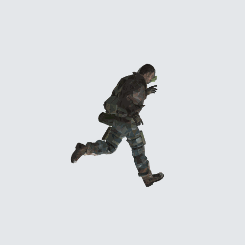

<!doctype html>
<html lang="ja">
<meta charset="utf-8">
<meta name="viewport" content="width=device-width,initial-scale=1">
<title>空中回廊 — 走行モーション確認</title>
<style>
*{box-sizing:border-box}body{margin:0;background:#111820;color:#edf4fa;font:15px system-ui,sans-serif}main{max-width:1160px;margin:auto;padding:18px}h1{font-size:21px;margin:0 0 8px}p{color:#b8c7d3;line-height:1.6;margin:8px 0}iframe{width:100%;height:65vh;min-height:320px;border:1px solid #344654;border-radius:10px;background:#26343c}nav{display:flex;gap:8px;flex-wrap:wrap;margin:12px 0}button,select{background:#233440;color:#edf4fa;border:1px solid #4b6475;border-radius:7px;padding:9px 12px;font:inherit}button[aria-pressed=true]{background:#a5e3cb;color:#10241c}label{display:flex;align-items:center;gap:8px;margin:10px 0}output{font-variant-numeric:tabular-nums}#result{white-space:pre-wrap;font-size:13px;color:#bcebd9}
</style>
<main>
<h1>走行モーション確認</h1>
<p>ゲームと同じ人間モデル・表示処理で確認します。「速度アップ取得」で5秒間、深い前傾・大きな腕振り・膝上げの本気走りに変わります。得点・プレイ記録は送信しません。</p>
<nav id="moves">
<button data-move="run" aria-pressed="true">走る</button><button data-move="walk">歩く</button><button data-move="stop">止まる</button><button data-move="turn">左右に曲がる</button><button data-move="side">横移動</button><button data-move="back">後退</button><button data-move="jump">既存ジャンプ</button><button data-move="slide">既存スライド</button><button data-move="ladder">既存はしご</button>
</nav>
<nav><button id="boost">速度アップ取得</button><button id="pause">一時停止</button><button id="shot">射撃姿勢</button><label><input id="weapon" type="checkbox">銃を表示</label><label><input id="original" type="checkbox">従来の走りと比較</label><label>マップ <select id="map"><option value="index.html">旧市街</option><option value="canyon.html">岩壁渓谷</option></select></label></nav>
<label>見る方向 <input id="angle" type="range" min="-180" max="180" value="70"><output id="degrees">70°</output></label>
<iframe id="game" title="人間モデルの動き" sandbox="allow-same-origin allow-scripts" src="about:blank"></iframe>

<p id="result">準備中…</p>
</main>
<script type="module">
const frame = document.querySelector('#game'), result = document.querySelector('#result');
const map = new URLSearchParams(location.search).get('map') === 'canyon.html' ? 'canyon.html' : 'index.html';
document.querySelector('#map').value = map;
document.querySelector('#map').onchange = event => { location.search = `?map=${event.target.value}`; };
let move = 'run', paused = false, t = 0, last = null;
const buttons = [...document.querySelectorAll('[data-move]')];
buttons.forEach(button => button.onclick = () => { move = button.dataset.move; buttons.forEach(b => b.setAttribute('aria-pressed', String(b === button))); });
document.querySelector('#pause').onclick = event => { paused = !paused; event.target.textContent = paused ? '再生' : '一時停止'; };
document.querySelector('#angle').oninput = event => { document.querySelector('#degrees').textContent = `${event.target.value}°`; };
// Install the network/storage guard before any game scripts can run.
const base = new URL('../', location.href).href;
const guard = `<base href="${base}"><script>window.__hold=true;
const request=window.fetch.bind(window);window.fetch=(url,options)=>/gunrun-runs\\./.test(String(url))?Promise.resolve(new Response('{}',{status:200,headers:{'content-type':'application/json'}})):request(url,options);
Storage.prototype.setItem=()=>{};Storage.prototype.removeItem=()=>{};Storage.prototype.clear=()=>{};
<\/script>`;
const wait = () => new Promise(resolve => setTimeout(resolve, 50));
try {
  const probe = document.createElement('canvas');
  if (!probe.getContext('webgl2') && !probe.getContext('webgl')) throw Error('このブラウザーではWebGLを利用できません。下は実モデルの形状データから生成したプレビューです（ゲームの描画画面ではありません）。');
  const source = await fetch(`../${map}`).then(r => { if (!r.ok) throw Error('game source'); return r.text(); });
  frame.srcdoc = source.replace('<head>', `<head>${guard}`);
  for (let i = 0; i < 400 && !frame.contentWindow.skyHumanView; i++) await wait();
  const w = frame.contentWindow;
  if (!w.skyHumanView) throw Error('ゲームの表示処理を読み込めませんでした');
  w.skyHumanView.select('unity');
  for (let i = 0; i < 400 && w.document.body.dataset.skyHumanLoaded !== 'true'; i++) await wait();
  if (w.document.body.dataset.skyHumanLoaded !== 'true') throw Error('人間モデルを読み込めませんでした');
  const g = w.__game, sky = w.__skyInternals, c = g.P, scene = g.debug.scene;
  const model = scene.children.find(o => o.name === 'Unity challenge human');
  for (const o of scene.children) if (o !== model && !o.isLight) o.visible = false;
  const T = g.debug.THREE, floor = new T.Group();
  floor.add(new T.Mesh(new T.BoxGeometry(40, .06, 40), new T.MeshBasicMaterial({color:0x33444d})));
  const gridMaterial = new T.MeshBasicMaterial({color:0x59717b});
  for (let i = -20; i <= 20; i++) {
    const across = new T.Mesh(new T.BoxGeometry(40, .002, .012), gridMaterial);
    const along = new T.Mesh(new T.BoxGeometry(.012, .002, 40), gridMaterial);
    across.position.set(0, .032, i); along.position.set(i, .032, 0); floor.add(across, along);
  }
  scene.add(floor);
  scene.fog = null; scene.background?.set('#23313a');
  g.S.gunOn = false; g.S.autoFire = false; g.S.aimAuto = false; g.S.sendLog = false;
  g.S.walkSpeed = 4.6; g.S.sprintSpeed = 6;
  // The map's collision field remains active even when its meshes are hidden.
  // View above it so camera obstruction cannot hide the animation model.
  c.pos.set(0, 200, 0); c.vel.set(0, 0, -6); c.yaw = 0; c.pitch = 0; c.eye = 1.62; c.state = 'normal'; c.onGround = true;
  g.setMode('play');
  w.skyDash.placePickups(c.pos, c.yaw);
  document.querySelector('#boost').onclick = () => {
    const saved = c.pos.clone();
    w.skyDash.reset(true);
    const item = w.skyDash.pickups[0];
    if (!item) return;
    c.pos.set(...item.position); w.skyDash.step(0); c.pos.copy(saved);
  };
  // Hide the gameplay HUD in this isolated animation viewer.
  for (const id of ['hud','touch','hookMark','menuLauncher','dashStatus','dashSpeedFx','dashPickupFlash']) { const node = w.document.getElementById(id); if(node) node.style.setProperty('display','none','important'); }
  document.querySelector('#shot').onclick = () => { g.S.gunOn = true; document.querySelector('#weapon').checked = true; sky.Et.ammo--; };
  function animate(now) {
    requestAnimationFrame(animate);
    const dt = last === null ? 1 / 60 : Math.min(.05, (now - last) / 1000); last = now;
    if (!paused) {
      t += dt;
      w.skyDash.step(dt); w.skyDash.frame(dt);
      const turning = move === 'turn' ? Math.sin(t * 1.5) * .85 : 0;
      c.yaw = turning;
      const speed = move === 'stop' ? 0 : w.skyDash.speed(move === 'walk' ? 4.6 : 6);
      c.vel.set(-Math.sin(turning) * speed, 0, -Math.cos(turning) * speed);
      c.state = 'normal'; c.onGround = true;
      if (move === 'side') c.vel.set(6, 0, 0);
      if (move === 'back') c.vel.set(0, 0, 6);
      if (move === 'jump') { c.onGround = false; c.vel.y = Math.cos(t * 5) * 7.2; }
      if (move === 'slide') { c.state = 'slide'; c.slideT = t % 1.2; }
      if (move === 'ladder') { c.state = 'ladder'; c.vel.set(0, 1.5, 0); }
      c.pos.addScaledVector(c.vel, dt); c.pos.y = 200; c.camY = 201.62;
      g.debug.camera.rotation.set(-.10, +document.querySelector('#angle').value * Math.PI / 180 + c.yaw, 0, 'YXZ');
      g.S.gunOn = document.querySelector('#weapon').checked;
      const original = document.querySelector('#original').checked;
      w.skyHumanView.runStyle = original ? 'existing' : 'parkour';
      w.skyHumanView.update(dt);
    }
    // Keep this grid in world space so a planted sole can be checked against it.
    floor.position.set(Math.floor(c.pos.x / 10) * 10, 199.965, Math.floor(c.pos.z / 10) * 10);
    const effects = scene.children.find(o => o.name === 'DASH pickups and effects');
    if (effects) effects.visible = false;
    g.debug.camera.fov = 48; g.debug.camera.updateProjectionMatrix();
    g.debug.renderer.clear(); g.debug.renderer.render(scene, g.debug.camera);
    const data = w.document.body.dataset;
    result.textContent = `読込完了 / ${data.skyHumanRunStyle} / ${data.skyHumanClip}\n速度アップ: ${w.skyDash.remaining.toFixed(1)}秒 / 本気走り: ${data.skyHumanDashBlend} / 足運び: ${data.skyHumanGaitPhase}${paused ? ' / 一時停止' : ''}`;
  }
  requestAnimationFrame(animate);
} catch (error) {
  frame.hidden = true; frame.style.display = 'none'; document.querySelector('#fallback').hidden = false;
  document.querySelectorAll('button,input').forEach(node => node.disabled = true);
  result.textContent = error.message;
}
</script>
</html>
